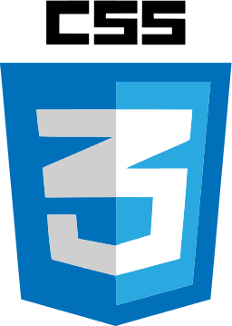

St Peter's and Paul's Primary school,
Kiama



The earliest project in my portfolio. It uses a Math.random function to select from an array of quotes to display from Kevin Spacey and his character from the political TV show House of Cards: Frank Underwood.
An option to tweet the displayed quote is provided by an icon-formatted button which takes the user to their twitter tweet page.
The Pomodoro Timer was introduced in the 1980's to break down work into intervals to increase productivity and efficiency. The ideal time was determined to be 25min followed by a short break, these periods were known as pomodoros. According to new theories the optimum time to be working is now 52min with a 17min break.
The web project allows the user to determine the work and break times when setting a countdown timer. After the timer reaches zero an alert is triggered and the background changes to a relaxing setting before reverting back.
Rounding the seconds in the date function was inconsistant at first but was remedied. The project also demonstrates new HTML5 input types range and number.
The web project is an imitation of the popular tic tac toe game with Jquery animations and bootstrap style grid. It involves a basic design which allows the user to choose which character they wish to play with a corresponding background.
The AI required research behind winning strategies for the game and implementing required many lines of if statements. The original idea was to use a switch statement to determine which action the opponent will take based on the previous move by the user. This approach was useful in the beginnning but there were limitations when a winning move could be made by the AI regardless of where the user moves.
The project was an interesting challenge in that it provided a practice for attention to detail and where beating the game meant I was faced with another bug.
A simply designed BODMAS calculator with a one line history. The user is able to chain all the basic operators in one line to calculate an answer that follows the order of operations.
The process is achieved by pushing the operators into two arrays, one containing all and one containing add and subtract. The numbers array are manipulated on it's array index before pushing them into another array reserved for numbers after the multiply and divide operators have performed their operations. The second arrays are then combined to give a final answer. This was done using for loops to provide a clear index value.
Additional buttons to clear history and to change the background were added in addition to the challenge requirements.
The Simon memory game is an online take of 1980's game of the same name. The web project aims to replicate the functions and aesthetics of the original. After starting the program a series of flashes with accompanying sounds reveal a pattern for the user to memorize. The user then inputs the pattern by pressing the buttons and if correct, is shown a new pattern with an additional step. A wrong move will be notified by a sound and the pattern is repeated. If played on hard mode, the pattern restarts from the first stage. Reaching 20 steps of the pattern beats the game. Good Luck!
The most difficult part of this challenge was implementing the sound and flashes of the buttons in a sequence without overlapping and not resorting to an unscalable timeout function. In the end I chose to implement a switch function inside a for loop to ensure that each loop designates a value to each switch and consequent timeout function to ensure a multiple was assigned to each time value. Previous attempts showed timeout functions do not hold variables passed onto them while executing a delay.
Once syntax for the pattern was established adding the timeout function for the button flashes was simple enough. I found that combining the two functions was easier to implement than triggering seperate color flashing functions.
This weather project was my first forray into using AJAX with API's and parsing the resultant JSON data. There are broadly two ways of doing this in javascript, one being xml request and checking the status in vanilla javascript and the other using Jquery's key/value pairs.
Understanding the concepts required research away from course material and led to information that at the time was more than I could handle. It was frustrating but settling on a Jquery approached I managed to create a simple local weather display.
Implementing the changing icons was only difficult because of the numerous options available on the internet and the subtle ways in which each could be used. It was also new to me at the time. The Z-index concept was new and exciting and I experimented with it but proved to be unecessary.
Wikipedia Searcher is another simply designed web app used to search the wikipedia database using an API. The design and animation takes advantage of animate().
The previous verson of this site involved different design textures that didn't make to the final version. The number of results altered the way the background image was positioned and was ultimately scrapped for a basic design.
After creating the weather project this was an easier challenge but pushed my Jquery skills in handling more than one search result.
The Twitch channel project is another project aimed to develop AJAX and JSON parsing skills. The information available in the API is much more diverse than previous projects. With images, urls and descriptions it provides greater detail for each channel represented.
My approach in to this project was different to my earlier API endeavours as I began with a design focus. It was the first step in developing my web development process. Where once I started with a basic structure and worked out the javascript, I now focus heavily on finishing all aspects of html and CSS design before implementing the functionality. This led to a frustrating time in photoshop learning the basics to layers and positioning, and a long lesson in colour schemes. The result is a minimalistic button dropdown that displays online and offline streams. A search function was implemented that was not part of the criteria which was a nightmare as it needed to display streamers that no longer streamed. This was the most time consuming project to date.
After becoming comfortable with Jquery's simple approach to AJAX, I learnt how to call upon API's in vanilla javascript and the status' involved with the web. There were many approaches but I settled on a modern version with an if statement determining the validity of the status before parsing the JSON.